CSE 154
Lecture 6: Intro to JavaScript
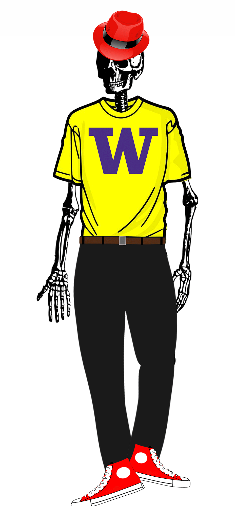Agenda
Wrapping up Flex
Introduction to Module 2 with JavaScript Basics
- Overview
-
Variables, output with
console.log, Numbers, Strings, Arrays - Our first JS Function:
openBox - Adding JS to a webpage: Handling our first click event!
A Note About These Slides
Today, we will spend a bit of time with the Chrome console to explore the basics of JavaScript, just enough to demonstrate how to use it with the DOM to interact with a button on a simple web page.
Over next week, we'll get more practice with the different language basics (conditionals, loops, functions, etc.) but you can find a handy reference slide deck here.
Reminders
HW1 due today, lock date tomorrow at 11PM.
Make sure to...
- Check your output with the screenshots
- Read/implement your TA's CP1 feedback!
CP2 will be out tonight, HW2 will be out tomorrow (two parts)
Wrapping Up Module 1
Summary of Flex Layout
Flex is a powerful way to create responsive page layouts
Really takes practice, but remember to use wireframes and the DOM!
Making an element a flex parent will unlock various flex properties to distribute across an axis and align down that axis.
The DOM tree is useful to focus only on the parent/children containers
Common bugs:
- Setting
display: flexon children instead of parent: Remember, the parent tells the children what to do! (with occasional cases of flex children properties likeflex-grow) - Making everything a flex container - use flex only when you want control over distribution/alignment
The Most Common Flex Properties
- Define a parent with
display: flex; - Is it a row or column?
flex-direction(defaultrow) - How do you want its children to be distributed across the main axis?
justify-content - How do you want the children to be aligned on the cross axis?
align-items - Do you want elements to wrap if the parent gets too small?
flex-wrap
flex-direction
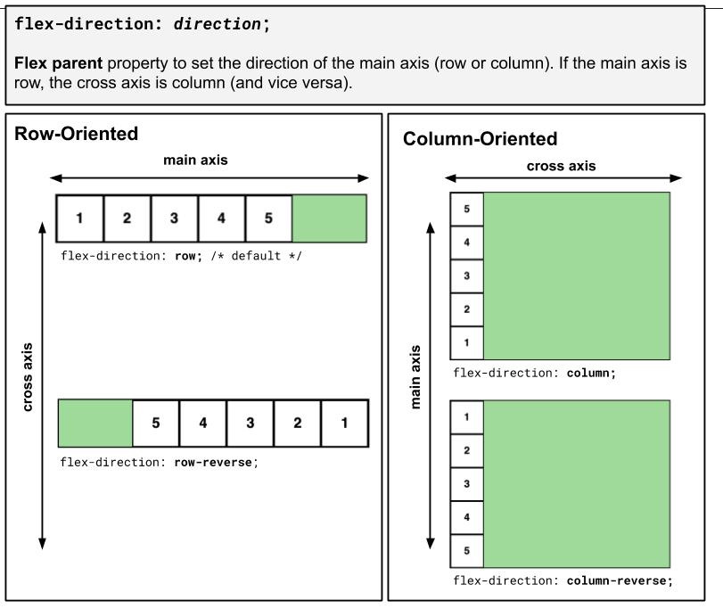Tip: Practice with this page and the Chrome Inspector using the next few slides.
justify-content
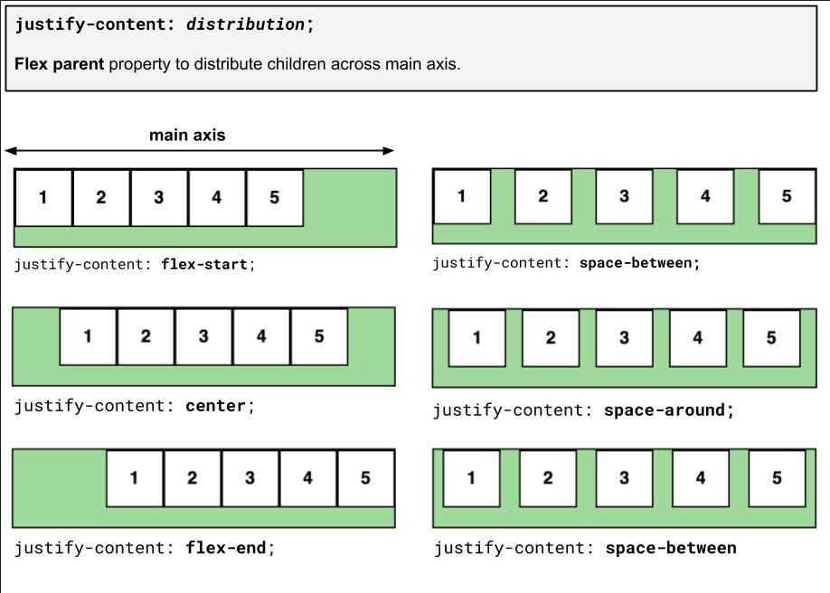align-items
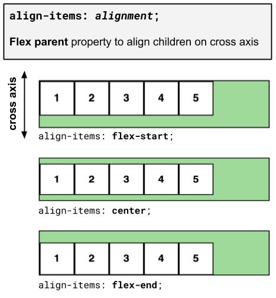flex-wrap
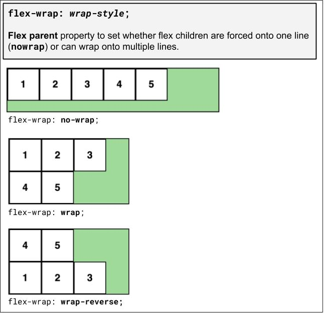flex-grow
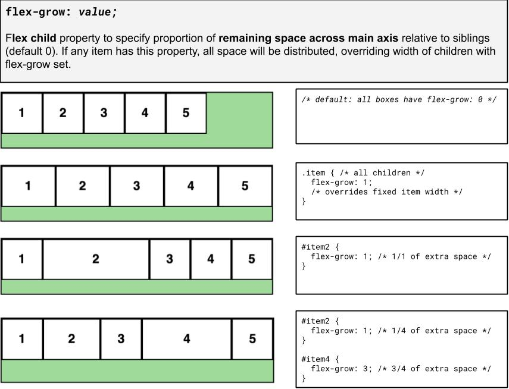Now... How About that Dance?
What is a web page, really?
Content
Words and images
Structure
HTML
Style

CSS
Behavior
JavaScript
What We've Learned So Far
How to write content for a webpage using HTML5
How to add styles to a webpage using CSS and linking a CSS file to an
HTML file
How to inspect the HTML and CSS of web pages in the browser
(...also Git, some web accessibility, and some design/development strategies as budding web developers!)
CSE 154 Modules
- Webpage structure and appearance with HTML5 and CSS.
- Client-side interactivity with JS DOM and events.
- Using web services (API's) as a client with JS.
- Writing JSON-based web services with a server-side language.
- Storing and retrieving information in a database with MySQL and server-side programs.
Webpage Behavior with JavaScript
Now that we know how to add content and styles to a web page, lets explore how to add responsive behavior
Over Module 2, we'll use these building blocks to dynamically update what you see on a web page in response to clicks, text input, timers, etc.
Terminology: Client-Side Scripting
Client-side script: Code that runs on the user's computer and does not need a server to run (just a browser!).
Client-side JavaScript is usually run after HTML and CSS have been loaded on the browser (e.g. from a server response).
Often, this JavaScript manipulates the page or responds to user actions through "event handlers".
What is JavaScript?
A lightweight "scripting" programming language
Created in 1995 by Brendan Eich (original prototype created in 10 days and called LiveScript)
NOT related to Java other than name and some syntactic similarities...
Used to define interactivity for web pages.
JS: Adding Behavior to HTML/CSS
We can use write JavaScript functions to...
- Insert dynamic text into HTML (ex: username)
- React to events (ex: page load, user's mouse click)
- Get information about a user's computer (ex: what browser they are using)
- ...
Creative Applications of JS in CSE154
- Help practice CSS layout
- Generate website themes using CSS
- Solve geometry problems
- Help layout Chinese text
- Build a Squirrel Army
- Collect BOUNDLESS cards
- ...
Today: Following Along
As an interpreted programming language, JS is great to interact with a line at a time (similar to Python, but very different than Java). Where do you start?
The easiest way to dive in is with the Chrome browser's Console tab in the same inspector tool you've used to inspect your HTML/CSS.
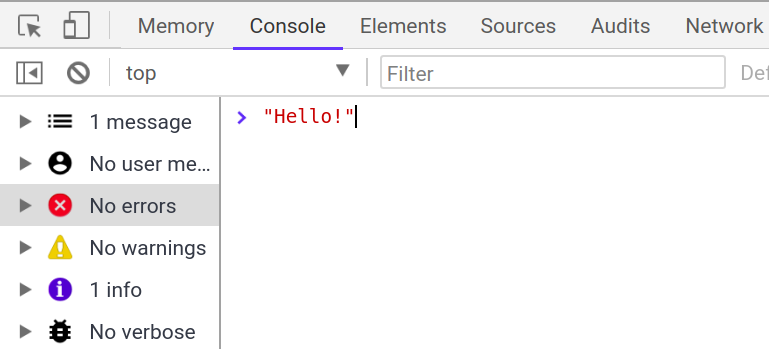Until we learn how to interact with the HTML DOM with JS, we recommend experimenting with the following code examples using this console to get comfortable with the basic syntax and behavior.
Our First JavaScript Statement: console.log
Used to output values to the browser console, most often used to debug JS programs.
You can think of this as System.out.println in Java or print in Python.
console.log("message");JS (template)
console.log("The answer is: " + 42);
JS (example)
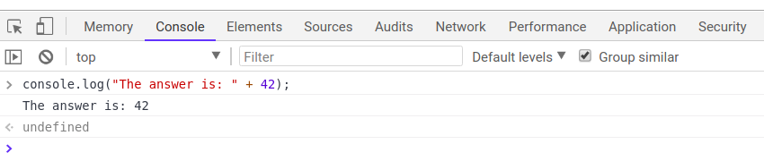
The alert Function
alert("message");JS (template)
alert("Your browser says hi!");JS (example)
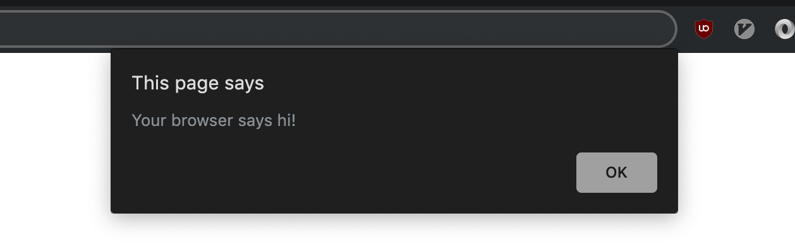A JS function that pops up a dialog box with a message - not ideal in practice, but sometimes a recommended debugging tool when first learning JS. Don't include alert statements in any of your assignments.
Comments (similar to Java)
// single-line comment
/**
* multi-line
* comment
*/
JS
Identical to Java's comment syntax
Recall: 3 comment syntaxes
HTML: <!-- comment -->CSS/Java/JS: /* comment */Java/JS: // comment
For functions and program files, we'll use JSDoc commenting with @param and
@returns, which is covered
in the Code Quality Guide here.
Variables
let name = expression;
JS (template)
let level = 23;
let accuracyRate = 0.99;
let name = "Pikachu";
JS (example)
Variables are declared with the let keyword (case-sensitive).
You may also see var used instead of let - this is an
older convention with
weaker scope - DO NOT USE var anywhere
CQG: Use camelCasing for variable (and function) names
"Types" in JavaScript
let level = 23; // Number
let accuracyRate = 0.99; // Number
let name = "Pikachu"; // String
let temps = [55, 60, 57.5]; // Array
JS (example)
Types are not specified, but JS does have types ("loosely-typed")
Number,Boolean,String,Array,Object,Function,Null,Undefined- Can find out a variable's type by calling typeof, but usually this is poor practice (why?)
- Note: Type conversion isn't always what you expect...
A Note about Declaring Types in JavaScript
If you've programmed in a statically-typed language like Java, you will recall that when declaring variables, you must specify their type which must always stay the same.
boolean isValid = "hello!"; // errorJava
In a dynamically-typed language like JavaScript, you don't need to specify the
type (just use let or const) and you may change the type the variable refers to later in execution.
let isValid = true; // no error
isValid = "hello!";
isValid = 1;
JS
This may seem to imply fewer errors in JS, but it's not uncommon to run into subtle (silent) bugs in your JS programs as a result!
Number Type
let enrollment = 99;
let medianGrade = 2.8;
let credits = 5 + 4 + (2 * 3);JS
Integers and real numbers are the same type (no int vs. double). All numbers in JS are floating point numbers.
Same operators: + - * / % ++ -- = += -= *= /= %= and similar precedence to Java.
Many operators auto-convert types: "2" * 3 is 6
NaN ("Not a Number") is a return value from operations that have an undefined numerical result (e.g. dividing a String by a Number).
String type
let nickName = "Sparky O'Sparkz"; // "Sparky O'Sparks"
let fName = nickName.substring(0, s.indexOf(" ")); // "Sparky"
let len = nickName.length; // 15
let name = 'Pikachu'; // can use "" or ''JS
Methods:
charAt,
charCodeAt,
fromCharCode,
indexOf,
lastIndexOf,
replace,
split,
substring,
toLowerCase,
toUpperCase
More about Strings
Escape sequences behave as in Java: \' \" \& \n \t \\
To convert between Numbers and Strings:
let count = 10; // 10
let stringedCount = "" + count; // "10"
let puppyCount = count + " puppies, yay!"; // "10 puppies, yay!"
let magicNum = parseInt("42 is the answer"); // 42
let mystery = parseFloat("Am I a number?"); // NaN JS
To access characters of a String s, use s[index] or
s.charAt(index):
let firstLetter = puppyCount[0]; // "1"
let fourthLetter = puppyCount.charAt(3); // "p"
let lastLetter = puppyCount.charAt(puppyCount.length - 1); // "!"
JS
Common Bugs when Using Strings
While Strings in JS are fairly similar to those you'd use in Java, there are a few special cases that you should be aware of.
- Remember that
lengthis a property (not a method, as it is in Java) -
Concatenation with
+:1 + 1is2, but"1" + 1and1 + "1"are both"11"!
Practice: repeat
Special Values: null and undefined
let foo = null;
let bar = 9;
let baz;
/* At this point in the code,
* foo is null
* bar is 9
* baz is undefined
*/
JS
undefined: declared but has not yet been assigned a value
null: exists, but was specifically assigned an empty value or
null. Expresses intentional a lack of identification.
A good motivating overview of
null vs.
undefined
Note: This takes some time to get used to, and remember this slide if you get confused later.
Arrays
let name = []; // empty array
let names = [value, value, ..., value]; // pre-filled
names[index] = value; // store element
JS (template)
let types = ["Electric", "Water", "Fire"];
let pokemon = []; // []
pokemon[0] = "Pikachu"; // ["Pikachu"]
pokemon[1] = "Squirtle"; // ["Pikachu", "Sqiurtle"]
pokemon[3] = "Magikarp"; // ["Pikachu", "Sqiurtle", undefined, "Magikarp"]
pokemon[3] = "Gyarados"; // ["Pikachu", "Sqiurtle", undefined, "Gyarados"]
JS (example)
Two ways to initialize an array
length property (grows as needed when elements are added)
Some Notes on Typing
As you write JS programs, you may will run into some silent
bugs resulting from odd typing behavior in JS. Automatic type conversion, or coercion,
is a common, often perplexing, source of JS bugs (even for experienced JS programmers).
Why is this important to be aware of? You'll be writing programs which use variables and conditional logic. Knowing what is considered truthy/false and how types are evaluated (at a high level) can make you a much happier JS developer (some practice)
Examples of some "not-so-obvious" evaluations:
2 < 1 < 2;// true
0 + "1" + 2;// "012"
[] + [];// ""
"1" / null;// Infinity
This is worth 3 minutes of your viewing pleasure. (starting at 1:20)
Defining Functions
function name(params) {
statement;
statement;
...
statement;
}JS (template)
function myFunction() {
console.log("Hello!");
alert("Your browser says hi!");
}
JS (example)
The above could be the contents of basics.js linked to our
HTML page
Statements placed into functions can be evaluated in response to user events
Practice:
fixErrors2
,
containsTwice
,
functionMystery1
,
sumUpTo
,
veryBestSong
JS Function vs. Java Method
function repeat(str, n) {
let result = str;
for (let i = 1; i < n; i++) {
result += str;
}
return result;
}
let repeatedStr = repeat("echo...", 3); // "echo...echo...echo..."
JS (example)
public static String repeat(String str, int n) {
String result = str;
for (int i = 1; i < n; i++) {
result += str;
}
return result;
}
String repeatedStr = repeat("echo...", 3); // "echo...echo...echo..."
Java (example)
JS Function vs. Python Function
function repeat(str, n) {
let result = str;
for (let i = 1; i < n; i++) {
result += str;
}
return result;
}
let repeatedStr = repeat("echo...", 3); // "echo...echo...echo..."
JS (example)
def repeat(str, n):
result = str;
for i in range(1, n):
result = result + str;
return result;
repeatedStr = repeat("echo...", 3) // "echo...echo...echo..."
Python (example)
From the Console to a .js File
Now, we'll use these building blocks of a new programming language to control the behavior of our pages (which we don't get with HTML/CSS!).
Lecture Activity
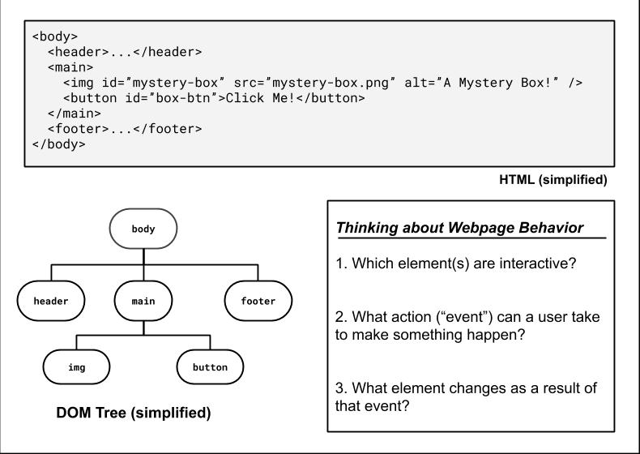JS/HTML Connection
In general, to add interactivity to our HTML/CSS websites we need to:
- Link a JS program to our HTML (in the
<head>) - Identify the elements we want to "listen" to user/page events
- Identify the events we want to respond to
- Identify what each response function is
- Assign the listener elements the functions when the event(s) occurs! own event(s) to listen to
Our Toolbox So Far: HTML/CSS + JS
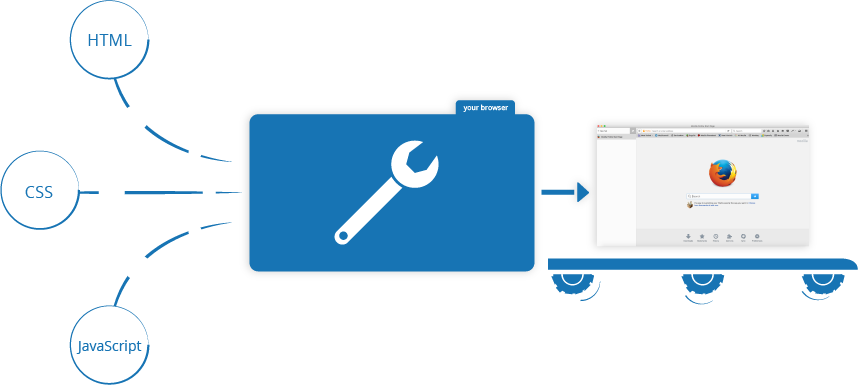 Image source (MDN) and recommended reading
So far, we have used Atom (or a similar editor) to write HTML/CSS for the structure/styles for our page. We will continue to use Atom to write JavaScript and add behavior.
As always, the webpage is rendered by the browser. We will add a link to our JS from HTML (similar to the idea of linking a CSS file) and the browser will execute the JS after the HTML/CSS has been loaded.
Linking to a JavaScript file: <script>
<script src="filename"></script>
HTML (template)
<script src="example.js"></script>
HTML (example)
The script tag should be placed in the HTML page's
head.
All JavaScript code used in the page should be stored in a separate .js file
JS code can be placed directly in the HTML file's body or
head (like CSS), but this is poor code quality. You should always separate content,
presentation, and behavior
Here's a basics.html linked to this basics.js - feel free to use these to practice with!
JavaScript "strict" mode
"use strict";
...your code...
JS
Writing "use strict"; at the very top of your JS file turns
on strict syntax checking:
- Shows an error if you try to assign to an undeclared variable
- Stops you from overwriting key JS system libraries
- Forbids some unsafe or error-prone language features
You should always turn on strict mode for your code in this class!
Back to HTML (Briefly!)
Recall: The DOM
A tree-shaped structure built out of all of the HTML elements in a page, accessible via JavaScript
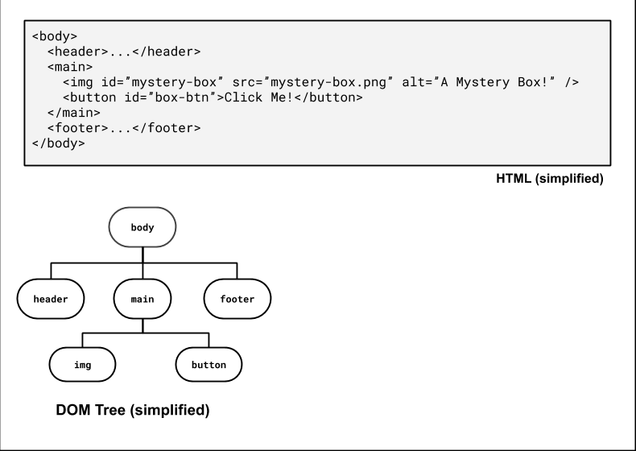More about the Document Object Model (DOM)
A set of JavaScript objects that represent each element on the page
Each tag in a page corresponds to a JavaScript DOM object with properties (e.g. src, classList) and functions (e.g. addEventListener)
Each element has properties and functions that JavaScript can use to examine elements' state
The DOM and JavaScript
JavaScript is a language that lets us interact with a webpage document
We can use JS to...
Access and modify properties of elements...
boxImg.src = "star.png"
Add/remove/toggle classes...
boxImg.classList.add("bordered")someInput.classList.toggle("highlighted")
Add/remove an "event listener"...
boxBtn.addEventListener("click", openBox);
We'll learn about each of these in the next few lectures!
The Six Global DOM Objects
Every JavaScript program can refer to the following global objects:
| method | description |
|---|---|
| document | current HTML page and its content |
| history | list of pages the user has visited |
| location | URL of the current HTML page |
| navigator | info about the web browser you are using |
| screen | info about the screen area occupied by the browser |
| window | the browser window |
Try typing each object in your console followed by "." - your browser will
try to autocomplete, and you can see what kind of information each global object
has! What kind of information do you get when typing
window.clientInformation?
Usually, you'll just want to use document (to access elements) and window (to know when the page is loaded) in your JS programs
Accessing Elements from the document object in JavaScript
Accessing an Element by ID
let name = document.getElementById("id");
JS
-
document.getElementByIdreturns the DOM object for an element with a givenid(note that you omit the#when giving an id) - We'll learn about other ways to get DOM elements (e.g.
document.querySelectorto get elements by class name) Monday!
What's inside a DOM object?
For starters, the HTML attributes. This HTML:
<img src="images/puppy.png" alt="A fantastic puppy photo"/>HTML
Has a DOM object (let's call it puppyImg) with these two properties:
puppyImg.src-- set by the browser toimages/puppy.pngpuppyImg.alt-- set by the browser to"A fantastic puppy photo"
Listening to Events with JS/HTML
There are a ton of HTML tags that are used to build UI (user interfaces).
Enter Text: <input type="text" id="input-text" /> <Go!>HTML
output
We'll start with the humble button today, but we'll learn a few more like input boxes and dropdowns next week.
The <button>
<button id="my-btn">Click me!</button>
HTML
output
Text inside of the button tag renders as the button text
To make a responsive button (or other UI controls):
- Choose the control (e.g., button) and event (e.g., mouse click) of interest
- Write a JavaScript function to run when the event occurs
- Attach the function to the event on the control
So how did that happen?
Event-Driven Programming
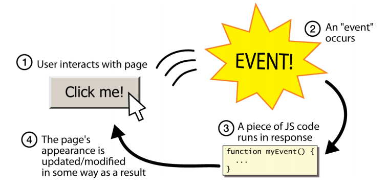
Unlike Java programs, JS programs have no main; they respond to user actions
called events
Event-Driven Programming: writing programs driven by user events
Listening and Responding to Events with addEventListener
function handleFunction() {
// event handler code
}
// attaching a named function
element.addEventListener("click", handleFunction);
JS (onclick template)
- JavaScript functions can be set as event handlers (also known as "callbacks")
- When you interact with the element and trigger the event, the callback function will execute
Using a click Event Handler to Open the Mystery Box
<img id="mystery-box" src="question-block.png" alt="A Mystery Box" />
<button id="box-btn">Click me!</button>
HTML
let boxBtn = document.getElementById("box-btn");
boxBtn.addEventListener("click", openBox);
function openBox() {
let box = document.getElementById("mystery-box"); // 1. Get the box image
box.src = "star.png"; // 2. Change the box image's src attribute!
}JS

output
Putting it All Together
As we'll learn more about on Monday, we need to wrap any JS code that interacts with the document
inside the window's load event handler. load is the event listened to
on the window to indicate when the page "is loaded".
When the page is loaded, everything in the
attached function (in our example, we call this init for "page initialization"),
is executed, including setting up the button's click event listener.
// listener attached before page is loaded
window.addEventListener("load", init);
function init() {
// this code is ran after page is loaded!
let boxBtn = document.getElementById("box-btn");
boxBtn.addEventListener("click", openBox);
}
function openBox() {
let box = document.getElementById("mystery-box");
box.src = "star.png";
box.alt = "A star!";
}mystery-box.js (commented example)
You can see the HTML output here (same from today's Lecture Pre-Check). On Monday, we'll add one more important component to our JS files: the module pattern.